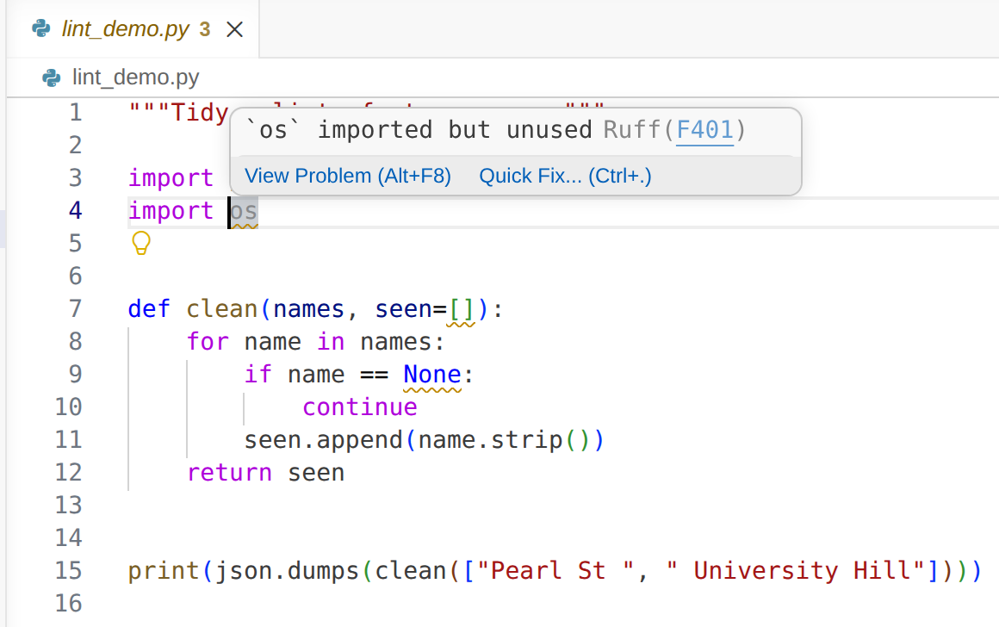

19 Code Style
Prerequisites (read first if unfamiliar): Chapter 17.
See also: Chapter 32, Chapter 33, Chapter 31.
Purpose
You and two classmates are finishing a group project. One of them opens a pull request that fixes a single bug, and GitHub shows 400 changed lines, because their editor turned every single quote into a double quote and re-indented half the file. Reviewing it takes an hour of squinting at whitespace, and the one line that mattered gets approved without a close look.
Nobody teaches code style, so most people’s code runs fine but looks a little different every day. That’s not a failing; it’s what code looks like before tools get involved. On your own it’s cosmetic. On a team it wastes code review on trivia, buries real changes in noisy diffs, and multiplies merge conflicts. The fix is two tools, a formatter and a linter, and about ten minutes of setup.
This chapter covers the two that are now standard in Python, black and ruff: how to run them, read what they tell you, configure them in pyproject.toml, and hand them to your editor, notebooks, and CI. It doesn’t cover type checking (mypy, in Further reading) or testing.
Why read this chapter
- Your teammate’s pull request changed 400 lines, and 390 of them are spaces, quotes, and blank lines.
- You ran
ruff checkfor the first time and got a wall of codes likeF401andB006, with no idea which ones matter. - Your function returned the last call’s results along with this call’s, and you’d like a tool that catches that before it costs you an evening.
- Code review on your group project keeps turning into arguments about single versus double quotes.
- CI failed with
1 file would be reformatted, and you’re not sure what it wants from you. - The squiggly underlines in your editor and the output in your terminal disagree about what’s wrong.
- You want a ten-line
pyproject.tomlyou can drop into any project so style takes care of itself.
Running theme: make the machine handle style so humans can focus on logic
If you’re debating spaces or import order with a collaborator, let the tools have that argument instead: write the decision into a config file, commit it, and spend review time on what the code does.
19.1 Formatters vs. linters
The two words get used interchangeably, and ruff does both jobs, so it’s easy to blur them. They’re different jobs.
A formatter rewrites your code to look a certain way and never changes what it does. The diff it produces is purely cosmetic: spaces, line breaks, quotes, blank lines. black is the classic Python formatter; ruff format is a newer one with nearly identical output.
A linter reads your code and reports problems without changing it (unless you ask it to fix them). The name comes from lint, a checker for C that Stephen C. Johnson wrote at Bell Labs in 1978, named after the lint trap in a clothes dryer. Linters are a kind of static analysis: they read code without running it, and catch anything from an unused import to a real bug. ruff check is the linter most new projects use; pylint and flake8 are older ones you’ll still see.
In short: formatters fix how code looks; linters find what code gets wrong. You want both.
19.2 PEP 8 in one paragraph
Most of what these tools enforce comes from PEP 8, Python’s official style guide (its version of the coding conventions most languages have), built on the observation that code is read much more often than it is written. The rules are sensible: 4-space indents; lines of at most 79 characters (up to 99 for a team that agrees on it, and black and ruff default to 88); snake_case for functions and variables, CapWords for classes, UPPER_SNAKE for constants; imports at the top; two blank lines around top-level functions and classes and one between methods; no trailing whitespace; and is None rather than == None. A formatter handles the layout and a linter checks the rest, so you rarely need to read PEP 8 to follow it. If you read one section, make it “A Foolish Consistency is the Hobgoblin of Little Minds”: consistency within a project matters more than consistency with the guide, which is why you write your choices into a config file.
19.3 black: the boring formatter
People meeting black often go looking for its options and find almost none. That’s the point. It calls itself “the uncompromising code formatter,” and its documentation states the deal: “By using Black, you agree to cede control over minutiae of hand-formatting.” You give up a say in where line breaks go, and nobody argues about it again.
Install it in your project’s virtual environment (see Chapter 15) and point it at a file or a folder; Black’s getting started guide walks through the same steps:
python -m pip install black
black src/analysis.py # format one file
black . # format every Python file in the project
black --check . # change nothing; fail if any file would change
black --diff src/analysis.py # show what would change, without changing itHere’s what black --diff --quiet analysis.py shows for a file written in a hurry (--quiet hides a summary line decorated with emoji):
--- analysis.py 2026-09-25 17:56:59.187382+00:00
+++ analysis.py 2026-09-25 17:56:59.360039+00:00
@@ -1,5 +1,9 @@
import pandas as pd
-def summarize(df,column = 'score'):
- result=df.groupby( 'subject' )[column].agg(['mean','median','count'])
+
+
+def summarize(df, column="score"):
+ result = df.groupby("subject")[column].agg(["mean", "median", "count"])
return result
-scores = {'Alice':92,'Bob':78}
+
+
+scores = {"Alice": 92, "Bob": 78}Spacing, quotes, and blank lines changed; what the code does didn’t.
The option that confuses people is --check. It prints would reformat analysis.py and 1 file would be reformatted., changes nothing, and ends with a nonzero exit status, which is how a CI job knows to fail. In CI, that message isn’t reporting a bug: it’s asking you to run black . locally and commit the result. (--diff alone exits with 0 even when there are changes; add --check if you want both.)
Black reads its settings from pyproject.toml, the standard project configuration file, written in TOML:
[tool.black]
line-length = 100
target-version = ["py312"]That’s nearly everything you can configure. Black also promises its output won’t change within a calendar year, so pin it in your requirements (black~=26.0) and everyone on the team formats identically.
19.4 ruff: the fast linter (and formatter)
ruff is a linter and formatter written in Rust that describes itself as 10 to 100 times faster than the tools it replaces: flake8 and dozens of its plugins, isort for sorting imports, pyupgrade, and more. For a new project, use ruff for both jobs; its tutorial is short. The output here comes from ruff 0.16.9 (September 2026); wording and rule codes change between versions, so yours may differ slightly.
python -m pip install ruff
ruff check .Here’s lint_demo.py, the file in Figure 19.1, with three problems in it:
"""Tidy a list of store names."""
import json
import os
def clean(names, seen=[]):
for name in names:
if name == None:
continue
seen.append(name.strip())
return seen
print(json.dumps(clean(["Pearl St ", " University Hill"])))With the configuration in the next section, ruff check lint_demo.py prints a block for each problem. The first one is:
F401 [*] `os` imported but unused
--> lint_demo.py:4:8
|
3 | import json
4 | import os
| ^^
help: Remove unused import: `os`
|
3 | import json
- import os
4 |
|followed by one for B006 (the seen=[] default) and one for E711 (== None), and then a summary:
Found 3 errors.
[*] 1 fixable with the `--fix` option (2 hidden fixes can be enabled with the `--unsafe-fixes` option).A first run can feel like being graded in a language you don’t speak, but every block has the same parts: a rule code and message, the file, line, and column (lint_demo.py:4:8), carets under the spot, and a help: line. [*] means ruff can fix it for you. When a code means nothing to you, ask: ruff rule B006 explains the rule and why it exists, and every rule has a page on the rules list. For one line per problem, add --output-format concise.
ruff check --fix removes import os and reports Found 3 errors (1 fixed, 2 remaining). Why only one? Ruff sorts fixes into safe and unsafe: a safe fix can’t change what your program does, and an unsafe one might. Replacing seen=[] with seen=None changes behavior (that’s the point), so ruff waits for you to add --unsafe-fixes. If you do, read the diff before you commit.
The formatter is a second command, ruff format . (or ruff format --check . to change nothing and fail if a file would change). It’s a drop-in replacement for Black: on large projects already formatted with Black, more than 99.9% of lines come out identical. Three things surprise people. It doesn’t sort imports; that’s lint rule I001, so include "I" in your rules and run ruff check --fix first. It ignores [tool.black], so set line length under [tool.ruff]. And since version 0.16 it also formats Python code blocks in Markdown files, so ruff format . may touch your README.
Configuration
Like Black, ruff reads pyproject.toml, with the linter’s settings in a [tool.ruff.lint] table:
[tool.ruff]
line-length = 100
target-version = "py312"
[tool.ruff.lint]
# Which rule sets to enable. See https://docs.astral.sh/ruff/rules/
select = [
"E", # pycodestyle errors (PEP 8)
"F", # pyflakes (logic errors)
"I", # isort (import order)
"B", # bugbear (likely bugs)
"UP", # pyupgrade (modernize syntax)
]
ignore = [
"E501", # line too long — let the formatter handle it
]
[tool.ruff.lint.per-file-ignores]
"__init__.py" = ["F401"] # allow unused imports in package init filesselect replaces ruff’s defaults rather than adding to them, which matters more than it used to: until July 2026 ruff checked 59 rules by default, and version 0.16 turned on 413. With no configuration, ruff 0.16.9 flags import os and seen=[] above but says nothing about == None, because E711 is no longer a default. With an explicit select, you get exactly the rules you listed, and upgrading ruff won’t change them under you. To keep the defaults and add to them, use extend-select instead (see the rule selection guide).
E, F, I, B, and UP make a good starting list. E501 (line too long) is ignored because the formatter already wraps lines, though only as a best effort: a long string or URL it can’t split would leave E501 nagging about something neither of you can fix.
19.5 Rule sets: what do E, F, I, B, UP mean?
Rule codes look like gibberish at first. The letters name the older tool the rule came from, which ruff reimplements, and the number picks a rule within it:
| Code | Source | What it catches |
|---|---|---|
E, W |
pycodestyle | PEP 8 style (indentation, whitespace, line length) |
F |
pyflakes | unused imports, undefined names, duplicate arguments |
I |
isort | import ordering |
B |
flake8-bugbear | likely bugs (mutable default args, unused loop variables) |
UP |
pyupgrade | modernize syntax (f-strings over .format, etc.) |
SIM |
flake8-simplify | simpler equivalent constructs |
ANN |
flake8-annotations | missing type hints |
D |
pydocstyle | docstring conventions |
You don’t need all of them. Start with E, F, I, B, and UP, and add more (SIM is a friendly next step) once those run clean.
19.6 When to override a rule
Most rules are worth accepting, but sooner or later one will be wrong for your situation, and the linter can’t know that. You can switch a rule off at three levels.
Globally, in pyproject.toml, for a rule that doesn’t fit the project at all:
[tool.ruff.lint]
ignore = ["E501"] # line too longPer file, in pyproject.toml, for a rule that’s right in most places and wrong in a few. Tests are the usual case: B011 warns about assert False, a mistake in regular code and sometimes deliberate in a test:
[tool.ruff.lint.per-file-ignores]
"tests/*" = ["B011"]Per line, with a # noqa comment, for one deliberate exception:
from legacy_code import UNUSED # noqa: F401Use # noqa sparingly, and always with the rule code: a bare # noqa silences every rule on the line, including ones you’d want to hear about later. Each is a promise that a person decided the rule didn’t apply; unexplained ones pile up into dead weight. Adding RUF100 to extend-select finds the ones that no longer suppress anything.
19.7 Editor integration: format on save
The real change comes when your editor formats every time you save: your code is never unformatted for more than a moment, and you stop thinking about style.
VS Code
Install the Ruff extension (or Black Formatter, if your project uses Black), then add this to your workspace settings.json:
{
"[python]": {
"editor.formatOnSave": true,
"editor.defaultFormatter": "charliermarsh.ruff",
"editor.codeActionsOnSave": {
"source.fixAll": "explicit",
"source.organizeImports": "explicit"
}
}
}Now every Cmd+S or Ctrl+S in a Python file formats it, sorts its imports, and applies the safe fixes (removing an unused import, say), leaving unsafe fixes for you to choose. VS Code’s guides to formatting and linting Python cover the other options.
The extension also lints as you type. It underlines each problem Ruff finds, and hovering over one names the rule and offers a quick fix (Figure 19.1).

os: the message and the rule’s code, F401. The tab’s “3” counts the file’s problems.
If the underlines and your terminal disagree, they may be running different copies of ruff: the extension uses the ruff in your environment if it finds one and its own bundled copy if not. Install ruff in the project’s virtual environment and select that interpreter in VS Code.
PyCharm
Recent versions of PyCharm have Black built in (since 2023.2) and Ruff too (since 2025.3). Turn them on in Settings under Python | Tools (see Python tools support), then enable Reformat code under Tools | Actions on Save. The menus moved in 2026.2; if they don’t match, search Settings for “Ruff”.
Jupyter
Notebooks keep code inside a JSON file, but ruff handles that: ruff check and ruff format work on .ipynb files directly and point to problems by cell (explore.ipynb:cell 1:1:8). Black skips notebooks unless you install it with python -m pip install "black[jupyter]".
To have cells formatted as you work, jupyter-black runs Black on each cell when you run it. Install it with python -m pip install jupyter-black, then put this in the first cell of a notebook in JupyterLab:
%load_ext jupyter_blackIn the classic Notebook interface, use import jupyter_black and jupyter_black.load(lab=False) instead.
19.8 Stakes and politics
On July 23, 2026, ruff 0.16 changed what ruff check means for anyone who hadn’t chosen their own rules: the default set grew from 59 rules to 413. Code that passed one day could fail the next without a character changing. Nobody voted on it; a small team decided which habits count as mistakes, and every project relying on the defaults inherited the decision. And the deciders can change: four months earlier, Astral, the company that makes ruff, announced it was joining OpenAI.
The same holds further down. PEP 8 dates from 2001 and lists three authors from Python’s core team, and its choices (four spaces, snake_case, 79 characters) became “Pythonic” through adoption, not proof. A formatter ends bikeshedding by settling every question one way, which is a real gift to a team. It also means someone else’s taste has become the rule, enforced by a failing check.
See Chapter 8 for the broader framework. The concrete prompt to carry forward: when you adopt a linter or formatter, find out whose preferences you’ve inherited and who can change them, and write your own choices into pyproject.toml where your team can see them.
19.9 Worked examples
Setting up a new project
python -m venv .venv
source .venv/bin/activate
python -m pip install ruff
# Create a minimal pyproject.toml
cat > pyproject.toml <<'EOF'
[tool.ruff]
line-length = 100
target-version = "py312"
[tool.ruff.lint]
select = ["E", "F", "I", "B", "UP"]
ignore = ["E501"]
[tool.ruff.format]
quote-style = "double"
EOF
# Run once on the existing code
ruff check --fix .
ruff format .
git add pyproject.toml
git commit -am "Add ruff config and initial formatting pass"The -a picks up the tracked files ruff rewrote, so the configuration and the first formatting pass land together. From then on, ruff check . takes milliseconds and prints All checks passed! when there’s nothing to report.
Adding a formatter to an existing group project
Formatting a project that never had a formatter changes almost every file, which is where the 400-line pull request at the start of this chapter came from. Do it once, on purpose: agree on the configuration, have one person run ruff format . and commit the result on its own, and merge it before anyone starts new work. A reformat mixed into a logic change is what makes review impossible (see Chapter 32).
Afterward, git blame credits that person with every line they re-spaced. To fix that, put the commit’s full hash in .git-blame-ignore-revs at the top of the repository:
# Reformat with ruff format
780ce9889b283a2aaed512b1daa690ec694c9caaGitHub’s blame view skips the commits listed there, and git config blame.ignoreRevsFile .git-blame-ignore-revs does the same for git blame on your machine.
Catching a real bug
# bug.py
def greet(name, greetings=[]):
greetings.append(f"Hello, {name}!")
return greetingsRunning ruff check bug.py:
B006 Do not use mutable data structures for argument defaults
--> bug.py:1:27
|
1 | def greet(name, greetings=[]):
| ^^
2 | greetings.append(f"Hello, {name}!")
3 | return greetings
|
help: Replace with `None`; initialize within function
Found 1 error.
No fixes available (1 hidden fix can be enabled with the `--unsafe-fixes` option).This classic trap catches experienced programmers too. A default value is created once, when the function is defined, not on each call, so every call that relies on it shares one list: greet("Alice") returns ['Hello, Alice!'], and then greet("Bob") returns ['Hello, Alice!', 'Hello, Bob!']. The fix is:
def greet(name, greetings=None):
if greetings is None:
greetings = []
greetings.append(f"Hello, {name}!")
return greetingsA bug like this hides until the second call, where it looks like bad data. A linter finds it before the code ever runs.
19.10 Templates
A minimal pyproject.toml for a student project:
[tool.ruff]
line-length = 100
target-version = "py312"
[tool.ruff.lint]
select = ["E", "F", "I", "B", "UP"]
ignore = ["E501"]
[tool.ruff.lint.per-file-ignores]
"__init__.py" = ["F401"]
"tests/*" = ["B011"]
[tool.ruff.format]
quote-style = "double"
indent-style = "space"A lint step for your GitHub Actions workflow (see Chapter 33):
- name: Lint
run: |
python -m pip install ruff
ruff check .
ruff format --check .Add it to the same continuous integration workflow as your other checks, and every push gets checked for style.
The ruff hooks for a .pre-commit-config.yaml (a fuller file, and how pre-commit works, are in Chapter 33):
repos:
- repo: https://github.com/astral-sh/ruff-pre-commit
rev: v0.16.9
hooks:
- id: ruff-check
args: [--fix]
- id: ruff-format19.11 Exercises
- Run
ruff checkon one of your own Python files. How many issues does it report? Look up two unfamiliar codes withruff rule <CODE>. - Run
ruff check --fixon the same file and read the diff. Did anything you cared about change? Which problems did ruff leave for you, and why? - Run
ruff formaton the same file and read the diff. Is any of it more than cosmetic? - Create a
pyproject.tomlfrom the template in Templates and commit it. - Wire up format-on-save in your editor. Add a space inside a pair of parentheses and save. Confirm the formatter took it back out.
- Deliberately write a mutable default argument, like the one in “Catching a real bug,” and confirm that
ruff checkreports it. - Add
ruff checkandruff format --checkto your CI workflow. Break the formatting in a commit on purpose and confirm CI fails.
19.12 One-page checklist
- Install
ruffin every virtual environment, and pin its version. - Commit a
pyproject.tomlwith an explicitselectlist. - Enable format-on-save in your editor.
- Run
ruff check .andruff format .before every commit (or automate it with the pre-commit hook in Chapter 33). - Let
--fixmake safe fixes; read the diff of any--unsafe-fixes. - Prefer
ruff formatoverblackin new projects; one tool is simpler than two. - Use
# noqa: RULEsparingly, and always with the rule code. - Put
ruff check .andruff format --check .in CI so style drift can’t land onmain. - Reformat an existing project in one commit of its own, and list it in
.git-blame-ignore-revs. - Don’t debate style with collaborators. Configure the formatter, run it, and move on.
- Python, PEP 8 — Style Guide for Python Code — the style reference most Python linters encode; worth reading once end to end so you know what your tools are enforcing.
- Astral, Ruff documentation — the reference for the linter and formatter this chapter uses; the rules pages are organized by category and worth scanning when you adopt a new rule set.
- Black, Black documentation — the formatter that ends style arguments by offering almost no options; the opening page explains the trade-off in two paragraphs.
- mypy, Documentation — Python’s standard static type checker; pairs with a linter once you start adding type hints.
- pre-commit, Documentation — the framework most projects use to run linters and formatters automatically before each commit; covered in Chapter 33.
- EditorConfig, EditorConfig — a small cross-language standard for indent, line-ending, and character-set settings that most editors read; useful when you collaborate across editors.
- Google, Python Style Guide — Google’s in-house Python style; a useful comparison for “what if a different group had written PEP 8?”